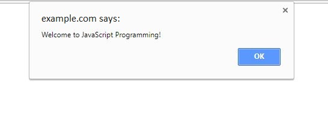
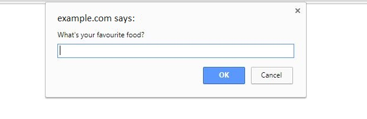

JavaScript
- JavaScript is a scripting language to enhance the functionality and appearance of a web page.
Displaying a line of text in a web page using JavaScript
Similar with CSS in the previous unit, there are also multiple ways of incorporating a JS script to a webpage:
Embedded scripts
- like the way we embed style sheets in an HTML, we can do a similar thing to JavaScript by adding in a script in between the <script> tag (HTML immediately knows that what follows is a script). The difference is that an embedded style scheet is strictly enclosed in the <head/> tag, and a script can go anywhere in the code.
- Example:
External Scripts
- Again, similar to CSS, we can add external scripts by having it as a source (src) to the script tag
- A JS script can be saved as a .js file
- Example:
Displaying a text in an alert dialog
JavaScript can implement the "pop-ups" that you can see on a web page
- To create and alert dialog:
- Example:
- Output:
- 
Sending a prompt that requires user to type in an input
This is another option for having a pop-up in a web page. JavaScript has a method for having the dialog window promt the user for input
- Example:
- Output:
- 
- Here's another exaple of having a default message on the prompt box before the user types in a message
- Example:
- Output:

Dynamic Rendering in JavaScript
JavaScript can do variables, arithmetic, equality and relational operators
Variables
- variables is a way of storing values in memory so that they can be retrieved and used later
- Example:
- Note: "=" is the assignment operator. It is used to assign values to variables. This operator should not be mistaken for the equality operator "==" to be discussed a little bit later.
Arithmetic Operators
- to do basic arithmetic in JavaScript:
- Examples:
Equality and Relational Operators
- This is used to compare values
- Comparing values is important in if..else statements and loops (discussed in the next section)
- The result for doing equality and relational operators is a boolean: True or False
- Examples:
Functions in JavaScript
Functions is a way to group statements together so that it can be reused later. Having functions makes the code more readable, and it also helps redundancy when a block of code is used multiple times.
- Example:
Control Statements in JavaScript
If-else statements
- if-else statements are used if a section of the code can only be executed if certain conditions are met
- Example:
Switch statements
- switch statements are useful if you have multiple different conditions to use. In this case, switch statements are more readable than using if-else statements.
- Example:
- Note: a default case should be use if in case any of the given cases doesn't work.
While loop:
- a while loop is used if a statement has to be executed multiple times while the condition is satisfied
- Example:
For loop:
- a for loop is used if a statement has to be executed given a certain amount of times.
- Example:
- Note: Use for loop instead of while loop if you're certain about number of times it's goonna be repeated
JavaScript Arrays
- a single variable in java script can hold multiple values.
- Example:
- Arrays are zero-indexed, meaning the first value has index 0, the second one has index 1, and so on. In the example above, animals[2] is used to retrieve the trid value in the array.
JavaScript HTML Document Object Model
- JavaScript and HTML are tied together using DOMs. With DOM, JavaScript is able to access and change elements in an HTML file.
- In the example earlier about displaying a line of text using JavaScript, it's using DOM.
- below are two more example of DOM methods.
documentGetElementById and innerHTML
- Another way to print a text using JavaScript is by adding it to an existing element in an HTML. The element is accessed by id and the method 'getElementById'. Then using 'innerHTML', the text in the element is changed"
- Example: